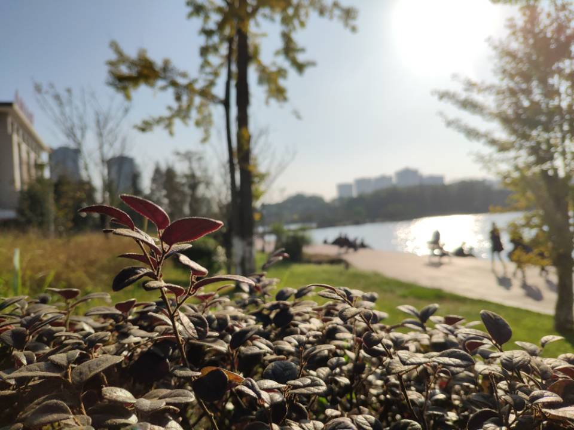

倒计时
学校概要
重庆交通大学是一所交通特色鲜明、以工为主的多科性大学。办学条件较为完善。现有南岸、科学城、大坪三个校区，占地3000余亩，学校固定资产总值36.17亿元，校舍建筑面积82万余平方米。师资队伍素质优良。现有教职工2100余人，其中专任教师1520余人，高级职称770余人。教育教学改革不断深化。不断完善教育教学协同联动机制，创新人生教育，拓展实践平台，凸显“交通+”培养特色，打造“创新创业园”，开办茅以升班、英才班、卓越工程师班、海外项目管理人才班、CIMA班、创新创业班等实验班。科技创新能力较为突出。拥有国家内河航道整治工程技术研究中心、山区桥梁与隧道工程国家重点实验室、交通土建工程材料国家地方联合工程实验室、长江航运工程与智能航道技术教育部首批省部共建协同创新中心等国家级平台，桥梁结构工程交通行业重点实验室、水利水运工程教育部重点实验室、山地城市交通系统与安全重庆市重点实验室等34个省部级平台，西南水运科学研究所、沙漠土壤化研究院等20余个研发机构。
1951
西南交通专科学校
1952
西南交通学校
1953
重庆公路学校
1954
西南公路学校
1955
重庆公路工程学校
1960
重庆交通学院
1985
开始招收研究生
2006
重庆交通大学
发展简史
优秀校友
-
孟凡超从1978年考入学校桥梁与隧道专业，与桥结缘，三十五年有余，他的名字就与黄石长江公路大桥、南京长江二桥、南京长江三桥、杭州湾跨海大桥、青岛胶州湾跨海大桥等国家重点工程项目紧紧相连；作为港珠澳大桥主体工程总设计师，他将“四化”的建设理念赋予了这座超级工程，为实现中国桥梁大国梦而倾尽心力。 大国工匠，碧海丹心，他就是我校1978级校友，中国交建副总工程师、中交公路规划设计院有限公司董事、副总经理孟凡超。正值70周年校庆，他赠与母校学子的话： 一个人的成功都不是一蹴而就的，成功涵盖了几个关键词：继承与创新；尊重与挑战；当前和长远。“吾生也有涯，而知也无涯”，学习是终身的事情，希望年轻的学子们永远保持一颗进取之心，脚踏实地，持之以恒。
-
高星林我校2001级校友（研），现担任港珠澳大桥管理局局长助理、计划合同部部长。港珠澳大桥建设工地摸爬滚打十年时间，他修桥，修身，在伶仃洋上，做一名不敢懈怠的追梦者。 无论到了哪一个部门、哪个岗位，高星林唯一离不开的是读书,高星林说，书是良药，除了读书能不断提高自己做人的修为，更能激发自己思考问题的能力，提升管理能力。这就是他在工作中反复提起的明代大儒王阳明所说的“事上磨练”“知行合一”“致良知”。他给母校学子的话 思考两个问题，第一个问题是“你想成为什么样的人？”建议学弟学妹们在大学四年或者研究生期间，根据自己的兴趣爱好尽早确定人生方向和职业生涯规划，早日立定志向，下定决心去追求。第二个问题是“未来，你准备好了没？”建议学弟学妹们坚持终身学习，有一个良好的习惯。
-
-
蒋中贵林同炎国际工程咨询(中国)有限公司总工程师,长期从事大型山地城市规划和道路、桥梁、隧道工程的设计、科研和施工技术管理工作，在山地城市交通规划设计领域具有30余年丰富的设计经验。 在重交70周年之际，他提到，未来是年轻人的，“对于年轻人来讲，学习能力是最重要的，或许现阶段你的专业能力和顶尖人才有所差距，但是只要不断学习进步，那总能找到自己发光发热的位置。另外一部分年轻人进入社会后，因为看到很多机会和选择，会在一段时间里陷入迷茫，这就要求年轻人要对自己的人生、职业都有一定的规划，对自己的发展有选择，有目标，我做了30多年的工程师，我所在的公司和我，目标都是‘培养有国际视野的中国工程师’，所以年轻人们也要把目光放长远，做一个有国际视野和社会责任的中国工程师。”
-
郑皆连中国工程院院士、广西大学教授郑皆连（我校特聘教授、1965届校友）领衔的大跨拱桥关键技术研究团队被授予全国创新争先奖牌。攻克了超500米跨径钢管混凝土拱桥关键技术，郑皆连团队创造了多项“世界第一”，也解决了系列工程顽疾，突破了拱桥原有技术瓶颈，成功服务重大战略工程。“我这一生，一直在设计、施工、管理单位工作，只是做事情肯动脑，出成果比较早，我一直认为自己只是一个工匠。”在郑皆连看来，桥梁工程师是不允许失败的，最好的工程师一定要修最适合的桥——充分研究建桥条件后，通过创造性劳动找出最好的桥。 “大量地修拱桥就会遇到大量的问题去解决，就会产生大量的技术。”郑皆连认为，作为应用型专业，桥梁专业的师生应当在重大工程中接受锻炼，既提高能力，也形成对专业的热爱。
- 

- from 1951 to 2021
- 李子湖澈，长江水长
- 七秩芳华，弦歌不缀
- 栉风沐雨，牢记使命
- 春华秋实，桃李芬芳
- 交通万里，国脉所系
- 从起于微末之刻，到立于发展之光
- 从筚路蓝缕，以启山林
- 从星星之火，燎原西南
- 到万千星海，照亮河山
- 70周年，时光荏苒
- 初心系国脉，奋进新时代